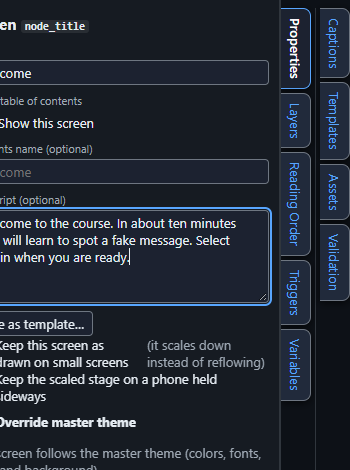
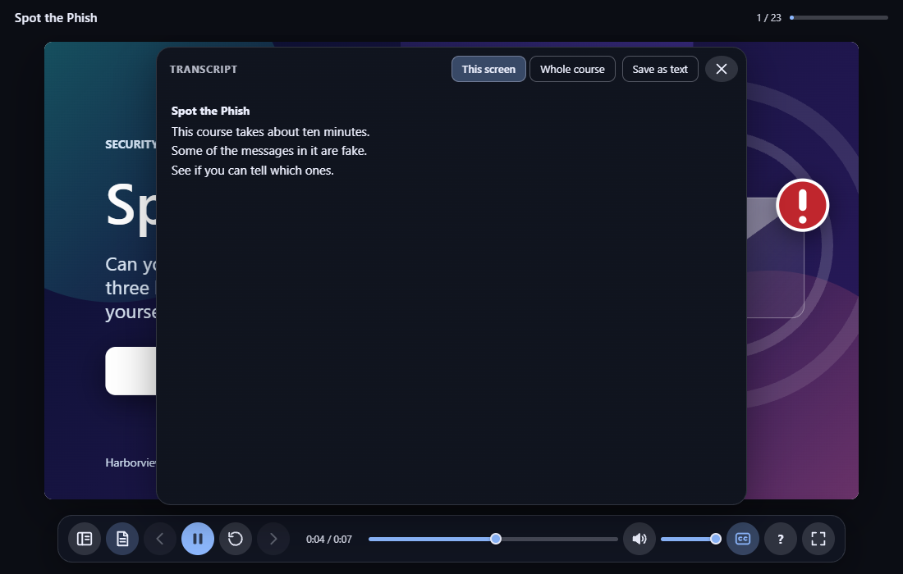

Write a transcript
A transcript is what is said and shown on a screen, written as words. Write it before any audio exists, as the script for your narration. Learners can read it, and save it as a text file, from the Transcript button in the player. It also helps anyone who cannot listen to the audio.
- Select the screen on the Flow Canvas and open the Properties tab.
- Type the words in the Transcript (optional) box. It holds up to 20,000 characters.

- Later, when you add narration, open the Captions tab and choose Start from the transcript to make captions from the same words.
What learners see. The Transcript button on the player's control bar opens a panel. This screen shows the transcript of the screen they are on, and Whole course shows every screen in order, each under its title. Save as text saves what is shown as a text file. Esc or the ✕ button closes the panel.

Good to know
- A screen with no transcript of its own uses the captions of its audio and video, so a narrated course has a transcript without extra work.
- The button shows only when at least one screen has a transcript or captions.
- To remove the button, open Player… and untick Transcript in the controls list.
- Everything you type is shown as plain words. Nothing you type can act as a link or a tag.